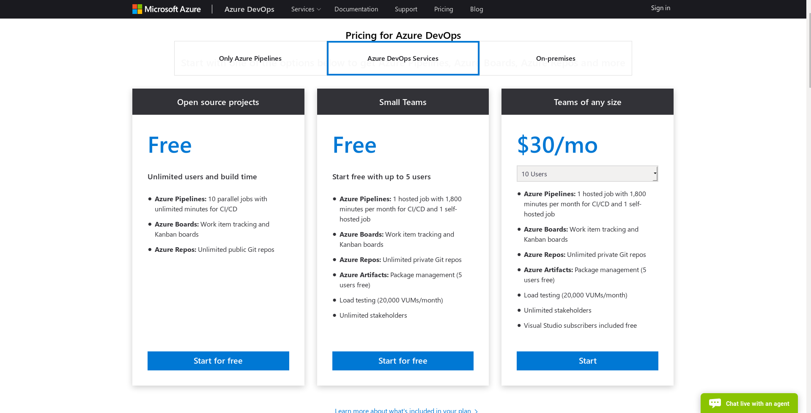

Sibi Prabakaran
Feb 13, 2019

pool: vmImage: ubuntu-16.04
steps: - script: | export PATH=$HOME/.local/bin:$PATH stack build displayName: Build Dependencies - script: | export PATH=$HOME/.local/bin:$PATH stack test displayName: Test Package